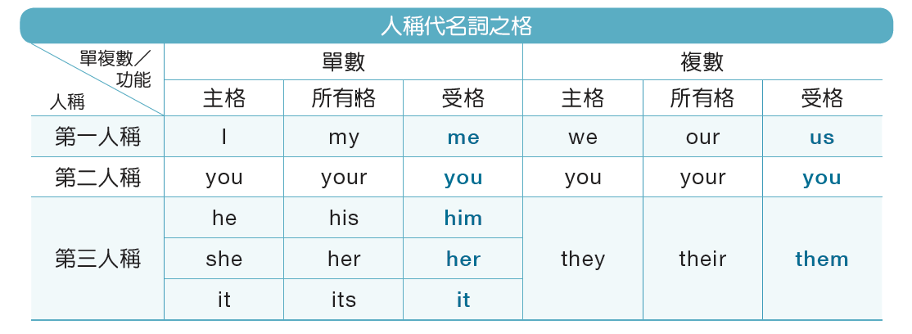
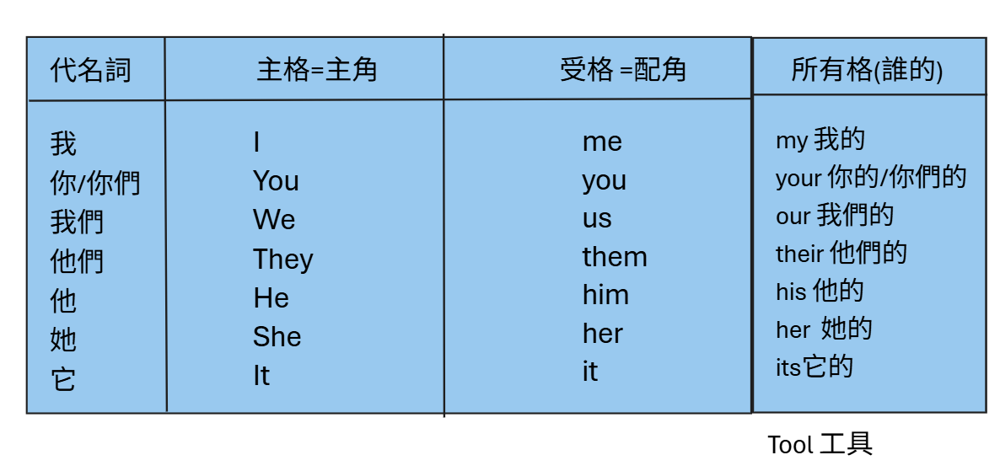
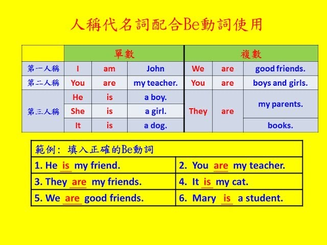

📘 礦坑 1：同一個人，換工作服
代名詞：代替人或物的名字。
像「他」「她」「我們」。
同一個人，位置不同就換詞！
主格 → 誰？句子在說誰？
誰做事／誰是……？
He：他是主角。
誰做事／誰是……？
He is my friend.He：他是主角。
受格 → 對著誰？動作的對象是誰？
動作對著他 → him。
動作對著我 → me。
講義說「配角」。
要記得他接住動作！
動作對著他 → him。
動作對著我 → me。
講義說「配角」。
要記得他接住動作！
所有格 → 誰的？物品或人是誰的？
我的朋友。
my 後面接 friend。
my friend我的朋友。
my 後面接 friend。
🧭 選詞的三步路
① 找「誰做事／誰是……」。
② 找「動作對著誰」。
③ 找「誰的＋人或物」。
不要只看是不是句子的第一個字。
要看這個詞在句子裡的工作。
⛏️ 礦坑 2：換裝工具表
第一人稱：說話的人（我／我們）。
第二人稱：聽的人（你／你們）。
第三人稱：談到的他、她、它／他們。
單數是一個；複數是多個。
| 意思 | 主格：誰 | 受格：對著誰 | 所有格：誰的 |
|---|---|---|---|
| 我 | I | me | my |
| 你／你們 | you | you | your |
| 我們 | we | us | our |
| 他們 | they | them | their |
| 他 | he | him | his |
| 她 | she | her | her |
| 它 | it | it | its |
注意這些長得一樣的詞：
you：主格和受格都一樣。
it：主格和受格都一樣。
her：受格「她」；所有格「她的」。
看工作，才能知道是哪一格！
本課的所有格要接人或物的名稱。
its 是「它的」；不要加撇號。
I 永遠大寫；句首要大寫。
🧱 礦坑 3：be 動詞配對
這張講義的 be 動詞表示「是」。
am、is、are 都是 be 動詞。
選哪個，要先看主格！
I → am「我」有專屬搭檔。
he／she／it → is一個他、她、它。
Mary 一個人，也用 is。
Mary 一個人，也用 is。
you／we／they → areyou 一人或多人都用 are。
we、they 有多個。
we、they 有多個。
📜 講義句子，逐句讀懂
I am John.我是 John。You are my teacher.你是我的老師。He is a boy.他是男孩。She is a girl.她是女孩。It is a dog.它是狗。We are good friends.我們是好朋友。You are boys and girls.你們是男孩和女孩。They are my parents.他們是我的父母。They are books.它們是書。He is my friend.他是我的朋友。They are my friends.他們是我的朋友。It is my cat.它是我的貓。Mary is a student.Mary 是學生。They 也能指多個物品。
選 be 動詞，先看句子在說誰。
不是看後面的 friend 有沒有 s！
老師的六題填空
He is my friend.
You are my teacher.
They are my friends.
It is my cat.
We are good friends.
Mary is a student.
🖼️ 對照老師三張原始講義



📚 單字複習｜美式英語發音
點選 🔊 聆聽美式英語發音，或點 📖 查劍橋英漢字典。下方的「✍️ 手寫」可練習默寫。
✍️ 單字默寫
💡 查看英文答案
✍️ 方塊手寫工作台
用 Apple Pencil、手指或滑鼠寫。
先自己想，再打開參考答案。
查看參考答案
手寫由自己對照答案。